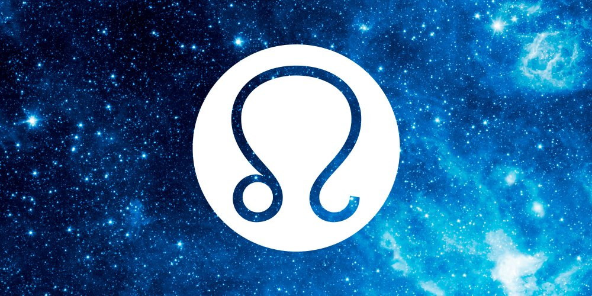
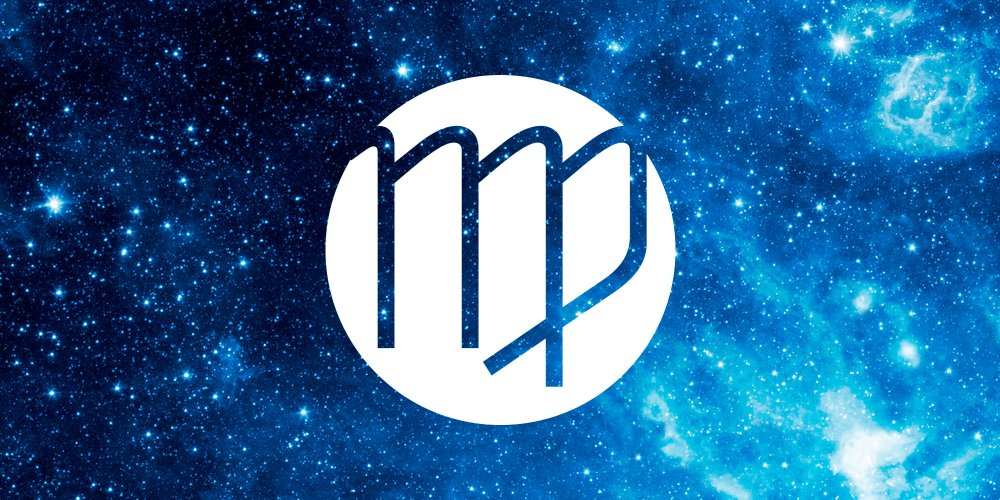
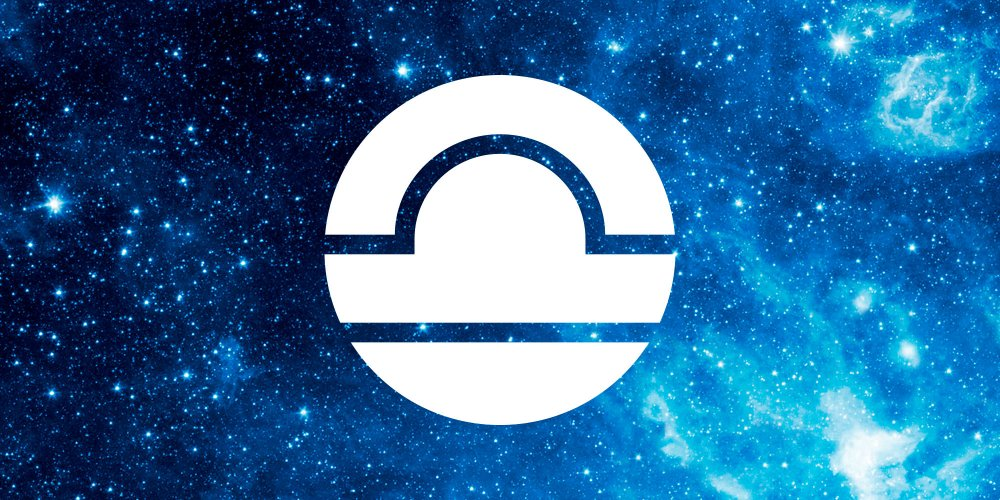
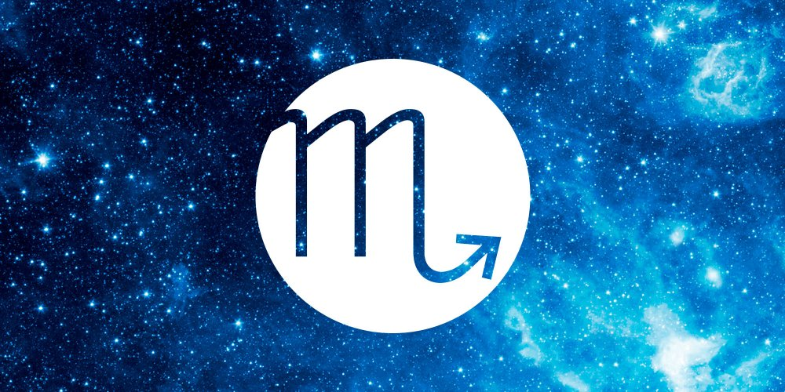
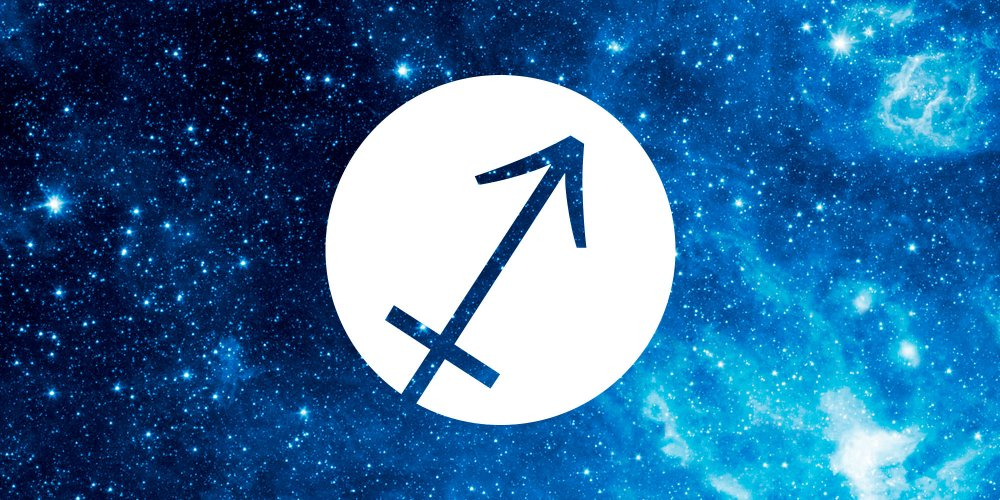
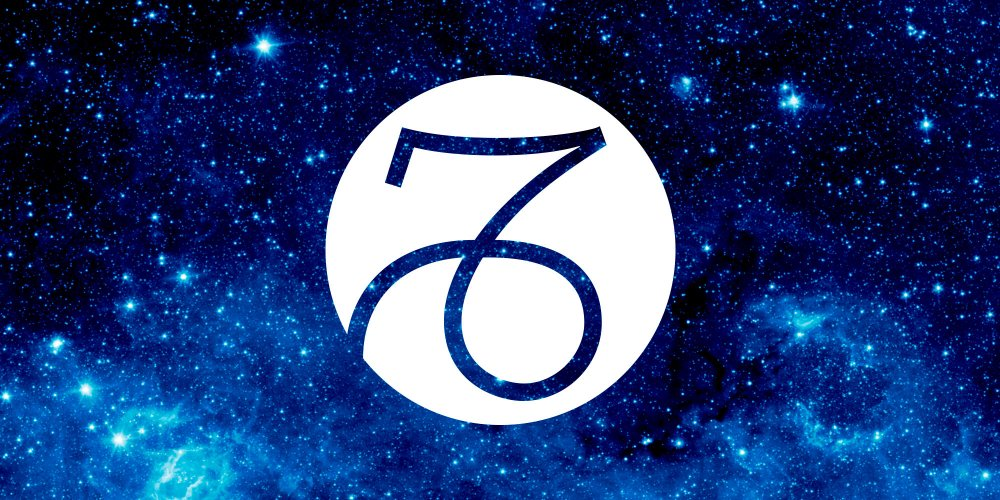

HOROSCOPE

BELIER
Bélier, votre année sera plein des aventures. Vous découvrirez quelles choses intéressantes vont se produire dans tous les domaines de votre vie : amou, travail, santé. Toutes les prévisions astrologiques pour bélier pour l’année 2020 sont gratuites . Vous devrez apprendre à décompresser et à vous relaxer en ce début d’année, afin de retrouver votre tonus avec l’arrivée du printemps. Il pourrait pour certains d’entre vous que se produisent des querelles familiales dans le courant de l’année. Vous vous rebellerez contre le train-train quotidien au niveau professionnel et surtout envers les gens un peu trop pointilleux. Exprimez-vous, ne gardez pas en vous quelques rancunes qui ne feront que grossir. Evitez de tout garder en vous et ne vous isolez pas, vous le regretteriez. Vous vous montrerez plus passionné envers votre partenaire avec l’arrivée de l’été, les vacances seront propices aux élans amoureux. Votre caractère est enthousiaste, actif, aimant l’action, esprit de chevalerie, noblesse de cœur, instabilité, versatilité, provocation, en avance sur son temps.AMOUR: L’horoscope amoureux 2020 pour le Bélier révèle que dans les mois de juin et novembre le Béliers auront de la chanceen amour, et les natifs seuls pourront trouver le partenaire idéal. Il se pourrait que vous vous donniez à corps perdu dans votre activité professionnelle, ce qui vous laissera peu de place pour les tendres câlins, chemin faisant votre vie sentimentale pourrait bien vous en ressentir. Une petite sonnette d’alarme retentira dans votre tête et vous fera ralentir au niveau professionnel, afin de reprendre les chemins des amoureux. Toutefois, il faut que ce ralentissement se fasse dans les deux sens, mais il se pourrait que vos besoins ne correspondent pas réellement à ses besoins. Alors, vous ferez une tentative en modifiant votre comportement, pourtant rien ne semblera l’éveiller côté sentiment, engendrant des méprises, des disputes, ce qui pourrait fort bien provoquer de fortes querelles pouvant entraîner une rupture si vous ne faites pas la paix. Tâchez de vous reprendre avant le printemps car avec les beaux jours pourrait survenir le désir de changement. Si vous résistez aux différents appels, vous réussirez à traverser cette période délicate, ainsi les mois suivants pourront s’écouler en toute quiétude. Vous réussirez à conclure une trève afin que survive votre amour. Vous vivrez alors des moments rares et forts ensemble, vous permettant de vous retrouver enfin comme au premier jour.
SANTE: Bélier , votre horoscope de la santé pour l’année 2020 dévoile que en général votre forme est excellente, vous êtes quelqu’un de robuste. Toutefois pour conserver cette forme excellente, en 2020 vous devrez prendre de bonnes résolutions surtout d’ordre alimentaire. Il est évident qu’en ce début de l’année, après avoir passer d’agréables fêtes de fin d’année, vous aurez certainement fait quelques excès de table et peut-être souffrirez vous de votre foie. Alors vous devrez vous mettre à une alimentation un peu plus légère, consommez du poisson cuit à la vapeur, beaucoup de légumes plutôt verts. De plus le surmenage ne vous épargnera pas, vous devrez réussir à éliminer toute la tension accumulée en pratiquant un sport. Bélier, au cours du dernier trimestre de l’année 2020, vous pourriez bien vous sentir fatigué, voire même affaibli. Restez vigilant, car la fatigue laissera la porte ouverte aux grippes ou angines. Le bon truc, pensez à avoir des heures de sommeil convenables, profitez donc de votre week-end pour faire du cocooning, cela vous changera.
FINANCE:: Vous réussirez à contrôler vos finances, ce qui vous rendra fier. Mais, et oui il y a un mais, vous vous appercevrez tous les dégâts causés par votre côté dépensier. Car vous trouverez toujours une bonne raison pour piocher dans votre réserve. Heureusement que votre partenaire vous rappelera à l’ordre, si vous êtes célibataire, votre banquier pourrait bien tenter de vous raisonner. A la fin du troisième trimestre, vous pourriez bien choisir une activité un peu plus avantageuse. Vous serez entendu, par contre, cette fois-ci évitez de dilapider vos biens. Car non seulement, cela finira par vous laisser sur la paille, mais en plus cela lassera les vôtres.
TRAVAIL: Bélier, les prévisions astrologiques pour le travail et pour les activités en 2020 sont très bonnes. L’horoscope du travail vous dévoile que vous commencerez cette nouvelle année sur des chapeaux-de-roues. Il vous faudra bien faire attention, car si vous voulez mener à bien tout ce que vous avez en tête, il vous faudra faire un choix, afin de pouvoir tout terminer. Vous passerez aux yeux de vos supérieurs pour une bête de somme, car ils vous confieront encore davantage de travail, de responsabilités. Vous n’aurez plus une minute à vous. Mais une petite sonnette résonnera dans votre tête, vous signalant qu’il faut ralentir afin de consacrer du temps à votre famille, si vous ne voulez pas trouver la soupe à la grimace en rentrant chez vous. Au cours du second trimestre, vous ferez preuve de vigilance face à de nouveaux contrats, vous les lirez avec application, lisant entre les lignes. Refusant ce qui ne vous convient pas, sans remords et vous aurez raison, car il est propable qu’en acceptant certains de ces contrats vous laissiez les autres passer le plus clair de leur temps à rêver plutôt que travailler. Vous serez dans l’obligation au cours de l’année, de déléguer un peu votre surcharge de travail.
FAMILLE: Vous qui gardez à l’intérieur de vous-même, cette vilaine impression d’avoir toujours été incompris par les vôtres et ce surtout lorsque vous étiez enfant, ce qui vous obligeait et vous oblige encore à cacher votre peine sous des dehors très actifs afin d’oublier. Alors, durant les deux premiers trimestres de cette nouvelle année vous pourriez bien vider votre sac à chagrin, des paroles dites dans le passé vous auront tellement fait mal que vous ne les aurez pas oubliées, vous mettrez tout sur la table, reprochant à certains leurs jalousies, à d’autres leurs préférences, mais pour tous les reproches seront grands autant que peut l’être votre peine gardée si longtemps. Ainsi cette année sera un nouveau départ, vous vous exprimerez sans peur d’être rejeté ou encore délaissé, vous le ferez pour votre bien, pour vous retrouver vous-même. Vous ne tournerez pas le dos à votre famille pour autant, non et malgré les mésententes, les sentiments triompheront de toutes les embûches. Si vous êtes parent vous aurez quelques difficultés à donner de votre temps à vos chères têtes blondes en ce début d’année, ce qui vous laissera frustré.

TAUREAU
Taureau, dans l’année 2020 vous vous sentirez très entouré par votre famille, vous sentant aimé et secondé ! Si vous avez des enfants vous pourriez bien avoir quelques soucis durant le second semestre, la communication sera plus difficile à faire passer durant ce laps de temps. Votre horoscope de l’ année dévoile que vos relations et vos finances resteront stables pendant l’année 2020 ! Jupiter débutera l’année en se positionnant dans le secteur de vos relations et leur apportera son énergie positive. Mars influencera votre vie et vos objectifs professionnels à partir de la mi-Mai et durant le mois de Juin ! Vous ferez tout au cours de cette nouvelle année, pour adoucir les soucis, les difficultés quotidiennes qui demanderont beaucoup d’effort et surtout beaucoup de maitrise. Evitez la prise de médicaments et surtout les tranquillisants ou les somnifères, préférez leur et de loin un sommeil naturel afin de vous ressourcer. Vous combattrez afin de stabiliser vos finances, vous finirez par opter pour l’économie ou le placement. Votre profession tiendra une très grande place dans votre vie, vous serez capable cette année de cerner réellement vos besoins, vos motivations ce qui favorisera vos succès.AMOUR: Taureau, votre début d’année 2020 sera plein de contradiction, un jour vous n’aspirerez qu’à être auprès de votre partenaire puis ce désir laissera place à des querelles. Tout ceci entachera les promesses que vous lui aviez faites! Vous passerez beaucoup plus de temps sur votre lieu de travail et rentrer chez vous deviendra un calvaire. Rassurez-vous, votre sensualité reviendra et vous réussirez à lui faire oublier ces mauvais moments, en lui prodiguant les caresses dont vous seul avez le secret. Vous ferez tout afin de satisfaire votre partenaire, vous irez même jusqu’à inviter ses collègues de travail à un dîner, vous vous rendrez chez ses parents avec le sourire.Si vous avez des enfants vous pourriez bien avoir quelques soucis durant le second semestre, la communication sera plus difficile à faire passer durant ce laps de temps. L’horoscope amoureux 2020 pour le Taureau révèle que votre partenaire ne pourra plus rien vous reprocher, alors dans le courant du troisième trimestre, vous recommencerez à passer plus de temps au travail, mais sans que cela n’entraine des disputes, votre relation résistera à ce rythme grâce à la confiance entre vous. De toute façon, vous n’êtes pas du genre à aller chercher ailleurs ce que vous avez chez vous. En 2020, vous regarder votre partenaire d’une manière différente si votre relation à déjà quelques années de vie, le redécouvrant en somme, ravivant cette flamme des premiers instants, vous montrant innovateur en matière d’amour.
SANTE: L’horoscope de la santé pour l’année 2020 vous avertira que vous devrez faire attention à votre souffle, car vos bronches seront un peu fragilisées ! Votre activité professionnelle sera tellement intense, qu’il vous faudra trouver un expiatoire afin de vous ressourcer. Vous êtes Taureau? Cette année pensez à manger sainement et surtout de manière équilibrée. Gourmand comme vous l’êtes, vous ferez preuve d’une grande détermination et résisterez aux alléchantes sucreries, pâtisseries. Bravo Taureau! Dans le courant de l’automne, restez vigilant par rapport à vos vertèbres cervicales qui vous donneront quelques douleurs, tout ceci sera dû à votre état nerveux.
FINANCE:: Cher Taureau, l’horoscope del’argent pour 2020 dit que vous vous montrerez habile négociateur, prendrez les risques nécessaires afin de réussir. Prudent, vous continuerez à épargner, car qui gagne plus d’argent paye plus d’impôts ! Vous finirez par réduire les dépenses, passant auprès des vôtres pour un radin.
TRAVAIL: Selon les prévisions astrologiques du 2020, cette année sera pour vous une année de transformation, vos ambitions vous serviront de tremplin. Vous souhaiterez changer d’activité professionnelle. Vous qui d’ordinaire avez une certaine tendance à réfréner vos envies, vous laisserez libre court cette année à vos désirs. Le ras-le-bol du train-train quotidien, vous fera voir le côté sordide du travail. Vous passerez par des phases de doutes, d’angoisses, de stress. A la fin du troisième trimestre, vous vous trouverez bloqué et déstabilisé. Dans l’attente d’une réponse qui tardera à venir, vous finirez même par penser un retour en arrière, mais n’en ferez rien, secondé par votre famille vous tiendrez bon.
FAMILLE: Vous avez toujours agit pour faire plaisir à votre famille et aujourd’hui vous continuez. Vous avez un grand besoin de reconnaissance de la part des vôtres. Mais cette année sera différente, vous préférerez passer le plus clair de votre temps auprès de votre partenaire, de vos enfants et plus rarement avec votre famille. Vous montrerez plus de tolérance envers la famille de votre partenaire et tout ceci par amour. Ceux à qui vous réserverez le meilleur accueil seront les enfants qui pourront vous demander des tas de choses sans avoir de refus en échang

GEMEAUX
L’horoscope 2020 viendra avec de bonnes nouvelles pour ceux qui sont nés sous le signe des Gémeaux. Le début d’année sera pour vous bénéfique au niveau finance, ce n’est pas une raison pour dilapider votre argent. Stressé durant le premier semestre, vous réussirez à vous détendre par la suite, la communication se fera plus facilement à partir de l’été. Vous ne serez bien que chez vous, auprès des vôtres, vous sentant entouré et aimé par votre famille, ce sera le plus important pour vous cette année, votre partenaire et vos enfants. Attention à votre esprit critique surtout dans vos rapports avec vos collèges car les relations professionnelles pourraient bien devenir difficiles. Toutefois vous pourriez énéficier d’une opportunité interressante dans le courant de l’année. Votre caractère est original, très adroit, esprit imaginatif, fraîcheur, ouverture d´esprit, affabulation, versatilité, flottement, caractère double et désinvolte ; éventuellement, commérages.AMOUR: Selon l’horoscope amoureux, en ce début d’année 2020, vous refuserez d’aborder des sujets délicats, vous jouerez plutôt la stratégie de l’autruche, vous cachant la tête dans le sol en prétextant que tout va pour le mieux dans le meilleur des mondes. Gemeaux, vous aurez trop tendance à vous enterrer dans la routine, métro-boulot-câlin-dodo, ce n’est pas la bonne solution et vous vous en rendrez compte bien vite, car votre bonne humeur s’en ressentira énormément. Tout ceci vous rendra quelque peu instable et irritable, vous finirez par faire des reproches à votre partenaire, car ce que vous aimeriez c’est trouver une épaule pour pouvoir vous appuyer, mais lui faire des reproches ne sera pas la meilleure solution si vous désirez qu’il y ait du changement. Vous appercevant de votre erreur, vous ferez tout pour opérer les modifications qui s’imposent. Vos sentiments seront tiraillés par Castor et Polux, un coup blanc, un coup noir, ce qui vous agacera beaucoup. La difficulté réelle proviendra de votre difficulté à trouver les mots pour réussir à parler clairement afin d’exprimer clairement ce que vous ressentez au moment où vous le ressentez. Celà pourrait d’ailleurs entraîner des mésententes dans votre couple. Rassurez-vous au cours du second semestre, vous retrouverez cette fougue qui est vôtre et qui fait tant votre charme, d’ailleurs votre partenaire retrouvera la personne pleine de charme, d’originalité qui a conquit son coeur. Célibataire, vous préférerez entretenir une relation loyale et honnête plutôt qu’une relation sans lendemain. Vous serez à la recherche d’une relation constructive.
SANTE: L’horoscope du santé pour le Gémeaux viendra avec beaucoup de conseils pour 2020. Il faudra penser à vous aérer, car vos bronches ont réellement besoin de prendre l’air. C’est un de vos points faibles ne l’oubliez pas. Alors, et ce surtout si vous vivez en ville, pensez à profiter des beaux week-ends afin de prendre un bon bol d’air frais, l’air de la campagne ne pourra que vous faire du bien. Vous pourrez ainsi évacuer un trop plein de stress, car la nervosité ne vous laissera pas plus tranquille cette année que les années passées. Votre esprit aura trop tendance a réfléchir pour un oui ou pour un non.
FINANCE:: Vous pourriez bien commencer l’année avec des retards, des remboursements que vous aurez des difficultés à effectuer et votre banquier pourrait bien vous faire les gros yeux. Rassurez-vous tout a une fin et vous pourrez recommencer à respirer au milieu du second trimestre. A partir de ce moment vous devrez faire preuve d’organisation et surtout bien faire tenir vos comptes à jour. Vous acquérerez plus de liberté dans le courant du mois de juin, car des surprises agréables arriveront. Vous pourrez terminer cette année, non pas dans l’opulence mais d’une manière agréable au niveaux finances.
TRAVAIL: L’année 2020 viendra avec de bonnes prévisions astrologiques dans le domaine du travail. Vous êtes une personne très tenace, ne lâchant jamais prise, lorsqu’un idée trotte dans votre tête, il faut que vous réussissiez à la concrétiser. Et cette année ne dérogera pas à la règle, vous ferez preuve d’une très grande concentration et de travail tout au long de cette année. Bien sûr, vous ne pourrez tout réaliser seul, vous accepterez donc l’aide d’autrui. Pourtant vous ne serez pas réellement enclin à solliciter leur aide, pensant peut-être à juste titre qu’ils auraient des tendances parasitaires.
FAMILLE: Une image s’imposera tout naturellement dans votre esprit cette année, celle de votre père, père autoritaire ou laxiste, sa personnalité ressortira dans vos gestes de tous les jours, dans votre attitude. Vous aurez peut-être besoin de regarder d’un autre oeil vos relations avec les hommes de votre entourage qu’il soit professionnel ou privé. Vous pourrez ressentir dans le courant de l’année 2020, le besoin de prendre des distances avec votre famille, car vous finirez par très mal supporter les silences. Dans le courant du second trimestre vous pourriez bien vivre une querelle assez forte avec une personne de votre famille concernant une femme.

CANCER
Votre caractère sera très protecteur envers les vôtres, vous vous montrerez très expansif dans votre communication ce qui favorisera le rapprochement de la famille. Le Cancer est compatible avec le Capricorne, le Scorpion et la Vierge. Les prédictions astrologiques de 2020 apportent de bonnes nouvelles, pour ceux nés sous le signe du Cancer. L’activité ne manquera pas cette année au niveau professionnel, le succès frappera à votre porte. Les atouts seront dans votre manche à vous de les sortir à bon escient, vous aurez une très grande ambition et réaliserez avec bonheur vos objectifs. Votre caractère est sensible, moral, secret, fantaisiste, très attaché, ténace, plein tact, passif, enclin à la mollesse, accès d´humeur, dépendance, sens du passé et des traditions, désordre, parasitisme, brouillon, esprit bohème.AMOUR: L’horoscope amoureux pour Cancer révèle des choses non résolues dans vos relations amoureuses. Votre partenaire se posera des questions quant à votre amour pour lui et aura plutôt le sentiment que vous êtes avec lui pour éviter tout simplement de vous retrouver seul. Mais votre possessivité envers lui le laissera pantois, ne sachant plus vraiment quoi penser. Vous ne supporterez absolument que votre partenaire soit en retard et vous le lui ferez remarquer, vous ferez tant et si bien qu’il se sentira vraiment coupable d’avoir eu quelques minutes de retard. Mais vous saurez le rassurer et lui pardonner en lui prodiguant vos gestes d’amour, ce qui lui fera comprendre que votre colère est terminée. Cette année oscillera entre le calme et la tempête. Célibataire, vous regretterez votre passé, mais rassurez-vous ces regrets seront de courte durée, car l’arrivée du printemps vous apportera de nouvelles rencontres.
SANTE: Cancer, votre horoscope de la santé pour l’année 2020 dévoile que ous serez cette année obsédé par la maladie, le moindre petit éternuement vous fera frissonner de peur d’avoir contracté quelques virus. Vous vous montrerez davantage vigilant, ce qui ne sera pas un mal. Vous pourriez bien ressentir quelques douleurs dues à une mauvaise digestion. A vous de prendre des résolutions pour une meilleure alimentation. Mangez de tout mais évitez d’en reprendre deux fois, les plats légers seront meilleurs pour votre organisme que les plats trop riches en sauce. Préférez également les légumes verts aux légumes farineux, les fruits frais vous seront également d’un grand secours. Faites de la natation, cela vous fera le plus grand bien.
FINANCE:: Vous ne supporterez absolument pas certains termes mentionnés sur les factures ce qui aura pour effet de vous les faire régler en retard. Tout ça pour avoir le dernier mot. Mais avec l’administration, ce ne sera pas la même chose, elle n’hésitera pas à vous envoyer des lettres de rappel et d’appliquer les majorations. Vous estimerez que vous devez faire 50-50 pour les dépenses avec votre partenaire, car vous ne serez pas d’accord du tout pour tout payer. Vous pourriez bien cette année, voir des primes arriver, ce qui ne sera pas pour vous déplaire. Au début du dernier trimestre vous demanderez audience à votre direction afin de demande une augmentation, petit bémol votre humeur fera que cette requête sera laissée de côté et honorée plus tard.
TRAVAIL: Vous vous montrerez très conquérant tout au long de 2020, si vous recherchez un travail, vous vous montrerez très convainquant envers votre futur employeur. Vous aurez enfin confiance en vous et en vos capacités. A la rentrée de septembre vous pourriez avoir quelques déboires avec certains de vos collègues, les reproches se baseront plutôt sur le comportement et non sur la manière de travailler. Il faut dire que vous serez plutôt tatillon et que vous palabrerez un peu trop ce qui aura pour effet de fatiguer vos interlocuteurs.
FAMILLE: Vous êtes très proche de votre famille et vous n’hésiterez pas à leur prouver votre amour, par des marques d’attention qui ne les laisseront pas indifférents. Car eux seuls vous aiment tel que vous êtes, ils ne seront pas sans arrêt à vous harceler par des questions sur votre vie sentimentale ou encore professionnelle, non ils se montreront respectueux de votre vie privée et pour ça vous ne les aimerez que davantage. Votre mère ou votre grand-mère est une femme très importante dans votre vie, vos sentiments sont très forts envers elle, cette année vous vous laisserez aller à des confidences, partageant avec elle les larmes de joies, de chagrin entrecoupées d’éclats de rire. Vos neveux ou vos nièces, vous donneront l’envie à votre tour de devenir parent, pour ceux qui ne le sont pas encore, car votre patience envers les enfants est nettement plus importante qu’envers les adultes.

LION
Votre mère ou votre grand-mère est une femme très importante dans votre vie, vos sentiments sont très forts envers elle, cette année vous vous laisserez aller à des confidences, partageant avec elle les larmes de joies, de chagrin entrecoupées d’éclats de rire. Vos neveux ou vos nièces, vous donneront l’envie à votre tour de devenir parent, pour ceux qui ne le sont pas encore, car votre patience envers les enfants est nettement plus importante qu’envers les adultes. Cette année vous demandera beaucoup d’effort et surtout de vous montrer capable de résultats. Car c’est ce que vos supérieurs attendront de vous durant 2020, vous prendrez plaisir d’ailleurs à ce genre de demande car ainsi vous réussirez à vous exprimer librement au sein de votre entreprise. Ce ne sera pas une année 2020 très facile, mais en faisant preuve de ténacité et de concentration, ainsi vous pourrez récolter ce que vous aurez semé durant ce premier semestre, à vous de bien cultiver afin de bien récolter. Vous serez quelque peu replié sur vous-même, manquant de communication envers autrui surtout durant le premier semestre, par la suite tout rentrera dans l’ordre. Vous vous montrerez très protecteur envers vos enfants si vous en avez, choisissant avec soin l’école, l’activité sportive. Votre relation sera quelque peu confuse durant le premier semestre, mais la tendresse et le bonheur reviendront à partir du second semestre. De ce fait vous ressentirez l’envie de vous évader avec votre partenaire, partir main dans la main sur la route de la vie. Votre caractère est généreux, lucide, ayant le sens de l´organisation, volonté, indépendance, orgueil, snobisme, lâcheté, arrivisme, amour-propre primaire et/ou théâtral. Il se cache derrière un masque dans trop de circonstances.AMOUR: Lion, cette année sentimentale devrait se dérouler sous de bons auspices, les années passées vous aviez en tête le bonheur des vôtres et vous faisiez abstraction de vos propres désirs, cette année vous reprendrez les rennes de votre vie amoureuse. Le regard de votre partenaire changera à votre encontre et vous prouvera que vous avez eu raison de réagir ainsi. Selon l’horoscope 2020 du Lion, vous n’aurez pas besoin de palabrer pendant des heures, un seul regard suffira vous vous serez compris, vous saurez vous servir de vos atouts et votre partenaire n’y sera pas insensible. Vous raviverez ce feu qui s’est endormi durant une certaine période, vous retrouverez de nouveau l’envie de séduire votre partenaire, de lui plaire et enfin de partager de nouveau ces moments tendresses qui ne sont réalisables que dans l’intimité de la nuit. Votre partenaire retrouvera en vous, les joies des premiers instants, les baisers langoureux du début de votre relation, ce qui l’empliera de bonheur. Vous prendrez tous les deux la vie sous un nouveau, la sensualité et l’érotisme seront de retour.
SANTE: Vous ferez une priorité du maintien de votre forme, car vous avez horreur de paraître négligé. Vous ferez donc attention autant messieurs que mesdames à votre silhouette. Vous pratiquerez du sport afin de vous sentir en forme et bien dans votre tête. Comme le dit le proverbe “quand la tête va tout va !”. Vous qui aimez la table, afin de vous évitez la souffrance d’un régime, mangez normalement sans reprendre deux fois d’un même plat. Cela vous évitera les petites rondeurs qui ont tendance à s’accumuler.
FINANCE:: Ne vous attendez pas à des rentrées d’argent exceptionnelles durant les trois premiers mois, par la suite vous pourriez bien avoir quelques surprises intéressantes. L’horoscope pour l’année 2020 vous recommandera de faire preuve de générosité envers vos proches. Vous ne saurez résister à l’envie de leur faire plaisir, ce qui les réjouira, cela va s’en dire. Vous vous montrerez toutefois un excellent gestionnaire. Faisant attention aux rentrées comme aux dépenses.
TRAVAIL: Selon l’horoscope du 2020, durant le premier semestre, vous vivrez votre train-train quotidien sans que de réelles satisfactions soient présentes, vous profiterez de ces six mois, pour mettre à profit l’observation et la patience. Vous êtes une personne qui a forger ses connaissances sur le tas, ce que vous savez vous l’avez appris par vous-même en travaillant dûrement. Maintenant vous connaissez exactement votre valeur et vos compétences. Vous serez à la recherche d’une transformation de votre situation, à force de ténacité, des portes s’ouvriront à vous dans le courant du dernier trimestre, vous pourriez bien être séduit par cette proposition qui pourrait bien vous permettre l’adaptation des horaires de travail, ce qui ne sera pas pour vous déplaire.
FAMILLE: La famille est pour vous une notion très importante dans votre vie, même si dans votre enfance vous avez souffert, vous êtes trop réservé sur votre passé et n’en parlez jamais, même à votre partenaire ou à vos enfants. Vous auriez même plutôt le réflexe d’enjoliver une enfance malheureuse. Vous ressentirez un immense besoin de marque de tendresse, tout au long de votre année vous rechercherez ces gestes d’affection qui sont très important à vous yeux. Rassurez-vous, vous serez entendu par tous ceux qui vous aiment, vos enfants, votre partenaire, vos amis, aucun d’eux ne reculera à vous prouver qu’ils tiennent à vous d’une manière très sincère. La fin d’année sera regroupée autour de tous ceux que vous aimez, vous n’hésiterez pas à organiser une fête des plus agréables afin de voir tout votre petit monde réunit et heureux.

VIERGE
L’horoscope 2020 pour Vierge révèlera que vous réussirez à acquérir une certaine aisance financière surtout à partir du second semestre, vous serez un peu moins fourmi que par le passé tout en surveillant vos dépenses. Vous serez par trop replié sur vous-même, éprouvant des difficultés à communiquer avec les vôtres, il est probable pour certain d’entre vous qu’un déménagement survienne dans le courant de l’année. Vous ferez tout pour réussir à obtenir un emploi du temps plus adapté à votre vie de famille surtout si vous avez des enfants, afin de leur accorder plus de temps passé à leur côté. Anxieux, vous somatiserez, pourtant votre santé sera bonne, évitez de vous angoisser si vous sentez la déprime arriver. Votre carriuère vous apportera la sécurité et vous chercherez à établir un plan professionnel à long terme. Il n’y aura pas de très grosses difficultés cette année, rien d’insurmontable, il semblerait que les astres viennent vous protéger contre les gros problèmes. Vierge, votre caractère est réaliste, analyste, aimant ordre, la neutralité, honnêteté morale, autocritique, protection, vue terre-à-terre, cœur aride, perfectionnisme, terre à terre, calculateur, négatif, réfractaire à ce qui le dépasse, sait ce que les autres devraient améliorer, mais l´applique rarement à lui-même.AMOUR: Vierge, cette année 2020 sera une année délicate pour ne pas dire difficile, car vous serez encore le pilier de votre foyer, tout reposera sur vos épaules. Pourtant vous aimeriez bien de temps en temps que d’autres épaules se chargent de porter tant de responsabilités. Selon l’horoscope d’amour 2020, vous ne cesserez de contenir vos sentiments, préférant être présent pour les vôtres, pour vos enfants les soulager, les câliner, les rassurer. Tout comme pour votre partenaire et il aura besoin de vous, de votre soutient, car durant une période d’un mois, il pourrait ressentir une baisse de moral assez importante en relation avec son activité professionnelle.
SANTE: Votre squelette vous fera souffrir en ce début d’année, tout ce qui est vertèbres et surtout les dorsales. Il est vrai que de toute façon, les angoisses, le stress, la nervosité des années passées font que tout votre corps vous signale que le ras-le-bol est arrivé et que vous allez devoir faire un peu plus attention à lui. Ménagez également vos intestins, ne mangez pas n’importe quoi et n’importe où, il vous faut manger à table un repas équilibré et non un sandwich sur le pouce, sinon ne vous étonnez plus de rien. Avec l’automne surviendra son cortège de virus, rhumes, tâchez de vous protéger.
FINANCE:: Vous qui êtes plutôt fourmi, vous le deviendrez encore plus, faisant et refaisant vos comptes. Vous pourriez obtenir une augmentation courant du troisième trimestre, ce qui ne sera pas pour vous déplaire et vous permettra de respirer un peu mieux. vous êtes le roi de l’horoscope des finances en 2020. Vous serez le cerbère des finances du foyer, faisant attention aux dépenses, tout en faisant preuve de générosité et vous réussirez à ménager la chèvre et le choux, ce qui est tout à votre honneur. Vous pourriez même réussir à faire des économies qui vous serviront en fin d’année.
TRAVAIL:L’horoscope apportera de mauvaises nouvelles à ceux qui sont nés sous le signe de la Vierge.Vous déburez l’année avec un ras-le-bol, votre activité professionnelle ne semblera plus vous convenir, vous ne prenez plus de plaisir à faire ce que vous faites, à voir les mêmes têtes tous les jours, entretenir les mêmes rapports avec vos collègues. Le changement serait le bien venu, mais quel changement ? Il est possible que l’on vous fasse des propositions, mais même si elles sont alléchantes, vous ne sauterez pas le pas, les risques ne sont décidément pas pour vous. Il est vrai qu’un tient vaut mieux que deux tu l’auras ! Mais à la rentrée vous retrouverez un mordant, une pêche et vous saisirez l’opportunité qui vous sera faite, vous serez entièrement satisfait de la suite des évènements.
FAMILLE: Pas toujours facile à vivre, c’est vrai, votre sens de la famille est sans égal, pour vous rien ne passe avant la famille, car sans elle vous ne seriez rien, du moins c’est ce que vous pensez. Vous n’avez pas toujours bon caractère, quelques fois vous faites preuve d’une mauvaise humeur déchirante, mais votre famille vous aime comme vous êtes avec vos défauts et vos qualités. Vous serez aux petits soins pour un de vos parents malades, le surveillant de près, regardant attentivement la prescription médicale. L’horoscope 2020 de la Vierge annonce que vous serez cette année plein de petites attentions pour votre famille, vous jouerez même les médiateurs et tenterez de calmer les esprits échauffés lors d’une réunion familiale, car les haussements de voix se feront sentir, vous avez horreur de voir naître des conflits au sein de votre famille cela vous rend malade. Vous serez très solliciter par les vôtres cette année, vous serez un peu grognon au début mais cela ne durera pas vous ferez n’importe quoi pour leurs faire plaisir.

BALANCE
L’horoscope apportera de bonnes nouvelles aux personnes nées sous le signe de la Balance. Votre énergie sera impressionnante durant le second semestre. Vous devriez cette année voir arriver l’expansion professionnelle que vous attendiez depuis déjà un certain temps. Vous pourriez bien traverser des hauts et des bas en matière de finances, les rentrées d’argent se feront en dents de scie mais vous réussirez grâce à votre volonté de faire fructifier une certaine partie de votre argent. Ce ne sera pas une année très difficile car vous saurez comment écarter et vaincre les ennemis qui se dresseront sur votre route, en somme cette année 2020 sera une belle année pour vous. Votre caractère est séducteur, souple, aimable, possédant le sens du raffinement et de la beauté, opportunisme, soumission, équilibre, équité, platitude, hypocrisie, manque de caractère, laxisme, girouette.AMOUR: Balance, votre vie sentimentale ne sera pas à son top mais votre relation ira mieux, car vous aurez décidé de ne plus défendre votre partenaire pour tout pour rien. Selon l’horoscope d’amour du 2020, vous réussirez à comprendre comment vivre votre vie à deux. Pourtant un changement plutôt une transformation aura opéré en vous, vous ne supporterez plus les mensonges de votre partenaire, vous ne laisserez plus rien passer, même pas le plus petit retard. Votre tactique sera complètement différente, vous serez tout en finesse n’hésitant pas à faire preuve de plus d’élégance lorsque vous sortirez ou encore accepter des invitations sans votre partenaire qui en sera tout étonné. Vous le verrez vous tendre la main pour vous prouver à quel point il tient à vous et qu’il souhaite que tout aille pour le mieux. Vous saurez qu’à ce moment là rien ne peu plus vous séparer et vos tendres ébats en seront la preuve et vous vous montrerez très gourmand.
SANTE: Cette année vous devrez manger équilibré, sainement et à des horaires régulières, si vous ne voulez pas que votre estomac vous fasse souffrir, car votre vie professionnelle sera très stressante, n’y ajoutez pas une mauvaise alimentation qui ne ferait qu’emplifier le stress. Le rythme que vous vous imposerez sera bénéfique sur votre vie de tous les jours et sur votre humeur. Vous finirez pas être plus résistant aux virus ambiants. Vous apprendrez cette année à vous relaxer, à vous détendre, ce qui sera vraiment une nouveauté, vous qui d’ordinaire êtes souvent sur la brèche, cette année vous prendrez un peu de recul, prenant le temps de respirer.
FINANCE:: Vous ferez preuve d’une très grande ambition, une légère hésitation vous tenaillera lorsque vous voudrez demander une augmentation, mais vous la ferez quand même. Vous serez du genre dépensier cette année. La chance pourrait vous faire un cadeau sous la forme d’un paiement que vous n’attendiez pas courant du second trimestre, il faudra redoubler d’attention dans le courant du printemps car vous pourriez être victime d’une perte que vous ne pourrez expliquer. La fin d’année qui arrivera vous trouvera épanoui car satisfait de vos finances et de la manière dont vous aurez géré vos comptes.
TRAVAIL: L’horoscope du travail pour l’ année 2020 sera du côté des personnes nées sous le signe de la Balance. Vos gros atouts professionnels seront la diplomatie, la prudence et la persévérance. Dès le début d’année vous pourriez vous voir confier des responsabilités plus importantes. Ce qui vous permettra de ne plus être astreint à des horaires strictes, vous aurez la possibilité d’adapter votre travail aux impératifs. Vous ferez preuve d’une très grande concentration, mais vos supérieurs devront vous donner des directives très précises car vous l’exigerez. Vous pourriez dans le courant de l’année avoir une proposition pour laquelle vous hésiterez à donner une réponse, prenant le temps de peser le pour et le contre, car avec le temps vous aurez appris à ne pas vous engager sans avoir au préalable obtenu les garanties nécessaires.
FAMILLE: Vous serez une épaule pour les vôtres, les aidant lorsqu’ils en éprouvent le besoin, les secondant dans les étapes difficiles de la vie. Toujours présent lorsqu’il le faudra, vous serez pour eux d’un grand secours. Dans le passé vous avez eu besoin de leur soutien, d’une épaule sur laquelle vous appuyer lorsque le ciel n’était pas clément pour vous, aujourd’hui c’est votre tour et vous ne faillirez pas à votre devoir. Vous conserverez les souvenirs des moments passés auprès de votre famille que ce soit dans votre mémoire ou encore sur papier glacé, que vous pourrez revoir avec plaisir lorsque vous éprouverez le besoin de revivre ces moments intenses d’émotion et de tendresse.

SCORPION
L’horoscope 2020 avertit les personnes nées en Scorpion: au niveau financier, ce domaine devrait être à la hausse, évitez toutefois de vous laisser-aller à des folies, mettez plutôt de l’argent de côté. Epargnez. Cette année, la communication avec votre famille ne sera pas vraiment géniale car il se pourrait qu’il y ait des problèmes de succession pour certains d’entre vous, qui pourraient bien se résoudre par un jugement. Vous apprécierez les moments passés avec votre partenaire et vos enfants, profitant des moments de détentes pour pouvoir profiter pleinement de vos chères têtes blondes. 2020 ne vous réservera pas vraiment de surprises désagréables, toutefois restez vigilant au niveau santé, car la nervosité sera vraiment très présente.AMOUR: Les predictions astrologiques d’amour pour le signe du Scorpion sont pleins de bonnes nouvelles. Votre relation débutera cette année sous les meilleurs auspices, votre humeur sera au beau fixe. N’ayant pas vraiment de soucis pécuniers les disputes seront beaucoup moins fréquentes, ce qui augurera de meilleurs jours pour vous deux. Les dépenses vous les ferez pour faire plaisir à votre partenaire. Au cours de l’automne de sombres nuages surviendront et vous rendront la vie insupportable, vous finirez par exploser de colère sans savoir réellement pourquoi, finissant par provoquer vous-même des querelles très difficilement acceptables, soupçonnant votre partenaire de quelques incartades sentimentales, qui ne seront absolument pas réelles, mais uniquement imaginaire. Et pourquoi ces soupçons, tout simplement parce qu’il ne répondra pas comme vous le souhaitiez à votre désir amoureux et vous laissera quelque peu sur votre faim de tendresse. Bien que vous lui soyez fidèle vous ferez tout pour éveiller chez les autres un désir sensuel. Eveillant par la même la jalousie de votre partenaire, vous aurez en fait réussit à reconquérir la personne chère à votre coeur.
SANTE: Cher Scorpion, vous ferez tout pour manger équilibré et de manière régulière, ainsi vous prendrez de bonnes résolutions en ce début d’année 2020. Vos humeurs seront quelque peu changeantes et difficile à suivre ! Vous ressentirez des difficultés à trouver un sommeil réparateur, le stress y sera pour beaucoup. Soignez-vous pas des remèdes homéopatiques plutôt que des somnifères qui vous assommeraient un peu trop et vous laisseraient le matin dans un piteux état. Avec l’arrivée du printemps si vous êtes sujet aux allergies, vous serez alors envahi.
FINANCE:: En ce début d’année 2020 vous réussirez à économiser. Ce qui vous fera dépenser un peu plus que prévu au cours du premier trimestre mais rassurez vous des rentrées d’argent vous aideront à renflouer votre compte. Avec l’arrivée du printemps votre partenaire et même votre banquier pourrait bien vous donner un coup de main pour gagner davantage d’argent et vous en serez ravi. Durant l’automne, vous aurez un peu de mal à admettre que vous devrez retarder ce que vous considérez comme être votre dû, si vous attendiez une augmentation elle pourrait bien arrivée plus tard que prévu. Alors vous ne voudrez plus dépenser pour quoi que ce soit et qui que ce soit, ce qui pourrait entraîner quelques difficultés dans votre foyer. Vous n’aurez à l’esprit qu’économiser et rien d’autre. C’est en fait la peur du manque qui vous motivera.
TRAVAIL: L’horoscope du travail révèle que vous serez très ambitieux cette année et ferez en sorte de tout faire pour réussir. Durant le premier trimestre du 2020 votre charisme fera beaucoup pour votre carrière, vous subjuguerez vos collègues comme vos interlocuteurs qui seront suspendus à vos lèvres. Votre progression sera assurée car vous saurez flatter les uns, seconder les autres, vous pourriez subir quelques retards durant les mois d’été, ce qui aura pour effet d’insérer le doute chez vous. Attention à l’arrivée du mois d’octobre vous vous sentirez beaucoup plus susceptible qu’auparavant, n’acceptant aucune remarque à votre encontre et aucune remise en question. Evitez de devenir obstiné et querelleur.
FAMILLE: Le seul endroit où vous vous ressourcez est votre foyer, là seul vous trouverez refuge. Votre famille vous aime et vous apprécie beaucoup, vous faites parti de ceux pour qui les traditions et les valeurs de la famille restent et resteront importantes. Vous n’hésiterez pas à rendre visite aussi souvent que vous le pouvez à vos parents, partageant ensemble des moments de tendresse intense, ce qui vous permettra d’être plus fort dans les moments moins joyeux. Vous ne mélangez rien, d’un côté votre vie de couple, de l’autre votre famille, tout est bien classé, ordonné et compartimenté, car vous n’aimez pas déranger les autres avec vos problèmes, pour ne pas inquiéter vos parents si vous avez des problèmes de couple vous ne leur en parlerez jamais à moins bien sûr que vous ayez besoin de leur conseil afin de trouver la bonne solution. En tant que parent vous-même, vous êtes très attentif et toujours présent pour vos enfants, vous n’hésiterez pas à passer du temps avec eux, que ce soit pour les emmener au cirque, au musée ou encore chez un copain.

SAGITTAIRE
L’horoscope 2020 des Sagittaires révèle que vous débuterez cette année 2020 avec une forme vraiment moyenne, votre tonus ne reviendra qu’à partir de l’été pas avant. Vous oscillerez entre la communication et la révolte contre l’oppression, ne sachant pas vraiment sur quel pied danser votre partenaire se fera du souci. De plus le ras-le-bol du train-train quoditien se fera beaucoup plus présent, vos moments de détente vous les passerez à aider les autres et apprendrez par la même occasion le respect d’autrui à vos enfants. Pour certains d’entre vous cette année sera l’année de rupture, fini la vie à deux qui vous étouffait ou ne vous convenait pas réellement. Ce sera une année de blocages, de retard, d’hésitations. Côté professionnel, vous aurez la méchante impression que rien ne va comme vous le voulez et que rien n’avance dans le sens où vous l’espériez, pourtant ce ne sera pas le cas. Votre caractère possède l’assurance, la largesse, la classe dans l´organisation et la cohésion, idéalisme, philosophies, vantardise, mégalomanie, universalisme, superficialité, nomadisme.AMOUR: Sagittaire, cette année 2020 vous tenterez de faire le point sur votre relation. Il semblerait que vous ne soyez pas vraiment sûr de ses sentiments pour vous. Vous ferez tous les deux des plans d’avenir. A la fin du premier semestre vous pourriez bien souffrir tous les deux au sein même de votre relation suite à des conflits entraînés par la famille, les paroles pourraient même devenir très blessantes et ce à propos soit de vos enfants, soit de vos parents respectifs. L’horoscope amoureux 2020 pour le Sagittaire vous révèlera que votre été 2020 redeviendra plein de tendresse et de douceur de vivre à deux, beaucoup d’amour et de complicité au menu de vos vacances. Car vous pourrez évaquer le stress qui vous aura bloqué un certain temps et là revivre. Les promesses ne vous suffiront pas il vous faudra des preuves, car l’acte d’amour est très important pour vous. Vous saurez vous montrer très inventif sur le sujet, à la fois très joueur et surtout gourmand au point d’en redemander car vous êtes rarement rassasié. Durant le dernier trimestre de l’année 2020 l’un de vous deux sera dans l’obligation de faire des concessions pouvant être très importantes, il est évident que la cohésion de votre couple dépendra de vos efforts mutuels.
SANTE: Vous réussirez à vous remettre de quelques désagréments car vous avez confiance en la vie. Ce début d’année 2020 vous trouvera fatigué, il est vrai que votre activité professionnelle ne vous laisse guère le temps de souffler. Toutefois, vous devrez faire attention à vos repas surtout si vous les prenez souvent au restaurant avec des clients par exemple, votre foie pourrait bien vous faire payer les écarts. A la rentrée, faites preuve de vigilance car vos nerfs seront à fleur de peau.
FINANCE:: Selon les prévisions astrologiques financières du 2020, dans le courant du premier trimestre du 2020 vous pourriez conclure une affaire des plus intéressantes. Vous serez décourager de voir tant de factures affluer mais rassurez-vous, vous vous en sortirez. A la fin du premier semestre, vous pourriez entendre des bruits courir sur une augmentation, tous les espoirs sont permis afin d’augmenter vos revenus. Vos espoirs ne seront pas vains puisqu’à la rentrée, vous pourriez recevoir une belle promotion, ce qui pourra vous aider pour déménager. Pour une fois vous saurez dépenser utilement.
TRAVAIL:Cher Sagittaire, vous serez capable de faire preuve d’adaptation en toutes circonstances. Tout ce que vous entreprendrez que ce soit un nouveau partenariat ou encore une association se dirigera vers la route du succès. Durant le second trimestre du 2020, vous pourriez bien trouver un allié de poids en la personne d’une femme ou d’un homme ayant suffisamment de pouvoir qui serait susceptible de rechercher des personnes possédant la détermination suffisante pour le seconder. Vous pourriez être l’homme ou la femme de la situation. A vous de saisir l’opportunité. La rentrée se passera sous de bons auspices et vous pourriez voir arriver le succès et la reconnaissance de votre valeur.
FAMILLE: A le plaisir de l’enfance retrouvée lorsque nous sommes devenus adultes, retrouver dans le grenier votre peluche qui vous permettait de pénétrer dans le monde des rêves merveilleux, vous retrouverez ce goût d’enfant en retournant chez vos parents, l’odeur des bonnes confitures maison, ce fumet incomparable des gâteaux que votre maman préparait avec amour. Sagittaire, cette année 2020 vous conservez cette mémoire qui vous rend quelques fois nostalgique du passé, ce qui ne vous empêche absolument d’aller de l’avant, car vous faites parti des battants, des combattants de la vie, ceux à qui rien n’arrive sans efforts mais qui savent très bien saisir le moment opportun pour réussir. Vous adorez arriver sans prévenir, juste histoire de faire un bisou sur le front de vos parents. Votre famille vous a toujours prévenu des dangers que vous encourez et vous reconnaîtrez qu’elle avait raison. Il vous arrivera de vous souvenir de leurs conseils trop tard tout en sachant que votre famille est toujours là, derrière vous prête à vous soutenir à toutes occasions. Si vous demeurez loin de votre famille, il se pourrait qu’un de vos proches, vienne à se rapprocher de vous que ce soit sentimentalement ou gréographiquement, tout ceci vous apportera une bouffée d’air pur, vous enchantera.

CAPRICORNE
L’horoscope 2020 révélera aux personnes nées sous le signe du Capricorne que cette année 2020 ne sera pas l’année des épreuves, toutefois évitez les excès pouvant se révéler néfastes pour votre santé. Ménagez votre foie. Cher Capricorn, votre caractère sera plutôt extraverti cette année, vous vous sentirez plus épanoui que par le passé. Vous afficherez une bonne humeur forte agréable pour votre entourage professionnel et privé. Les finances seront belles, toutefois attendez-vous à quelques retards dans vos rentrées. Vous sentirez renaître l’intérêt envers votre partenaire. De ce fait, vous saisirez le moindre petite instant, le plus petit week-end pour partir avec votre partenaire, afin de vous retrouver seul tous les deux.AMOUR: En ce début d’année, l’horoscope d’amour du Capricorn on dit que vous ressentirez un malaise, cela tiendra au fait que vous avez peur et tout simplement peur de l’engagement. Vous voyant dans cet état d’esprit et de tension votre partenaire fera tout pour que vous lui parliez. Mais rien n’y fera car même si vous êtres en couple depuis longtemps, vos émotions vous les garderez pour vous et rien que pour vous, restant prudent. Au sein de votre couple, un sujet de conversation, voire même de disputes reviendra souvent, les finances. Vous ne vous senirez rassué qu’avec un compte bancaire dans le positif. Vous devez faire preuve de vigilance car à la fin du premier trimestre, votre coeur pourrait bien battre la chamade pour une personne de votre entourage, si vous êtes célibataire ce sera sans conséquences, mais si vous êtes en couple cela pourrait entraîner des difficultés. Toutefois, vous êtes d’un tempérament fidèle, mais ce petit intermède vous aura fait plaisir et vous aurez apprécie de voir le désir dans les yeux de l’autre. Dans le courant de l’été, vous retrouverez votre côté adolescent et personne ne pourra compter sur vous durant la période estivale. Vous ne savez pas parler de vous, de ce que vous ressentez, il serait nécessaire afin que vous puissiez vous épanouir d’arrêter d’avoir peur, laissez vos émotions prendre le dessus, laissez les s’exprimer.
SANTE: Vous redouterez de prendre des kilos et vous ferez afin de les éviter. Dans le courant du second et troisième trimestre, vous pourriez bien souffrir de douleurs articulaires, il vous faudra faire des exercices réguliers afin de les atténuer. Lors de vos congés annuels il serait bon de ne pas trop vous exposer au soleil sans avoir réalablement protégé votre peau si vous ne voulez pas avoir des problèmes. Méfiez-vous également des allergies arrivant avec le printemps, surtout pour tous ceux qui souffrent d’asthme.
FINANCE:: De ce côté vous ferez preuve d’intelligence, de lucidité, ainsi que de rigueur. Vous pourriez en ce début d’année percevoir une augmentation relative à vos compétences. Vous gagnerez de l’argent et vous aurez tendance à une certaine avarice, vous manquerez quelque peu de générosité. Lorsque vous verrez les reproches dans les yeux de votre partenaire, vous donnerez un peu mais avec réticence. En fin d’année vous pourriez recevoir des primes qui seront les bienvenues, faites preuve d’un peu plus de largesse envers vos proches.
TRAVAIL: Il se pourrait que certains de vos collègues vous fassent des reproches concernant, ce qu’ils appeleront votre “lenteur” de travail, mais ils s’appercevront bien vitre que vos résultats seront performant ce qui les obligera à se taire et à ne plus vous critiquer. Vous serez très méticuleux, tranvaillant avec concentration, personne ne réussira à vous faire lever la tête de votre travail, ils essaieront en vain. Courant du premier trimestre, il faudra vous méfier de vos collègues féminines car elles pourraient tenter de vous entraîner dans un conglit dans lequel vous risqueriez de perdre beaucoup. Résistez, ne vous mêlez pas de ces conflits, ce sera le comportement le plus judicieux à prendre.
FAMILLE: Si vous faites parti des parents, cette année vos enfants auront besoin de vous, de votre présence. Vous partagerez ensemble la joie de vivre tout simplement. Votre famille et plus précisément celle qui vous a donné la vie parlera de vous avec fierté, vous serez en quelque sorte son idole. Tous les bons moments reviendront à votre souvenir et vous laisseront un sourire d’enfant sur les lèvres. Vous aurez oublié tout ce qui a pu vous blesser pour ne penser qu’aux périodes heureuses de votre vie que vous avez partagé avec votre famille. Pour vous l’essentiel est de vous sentir bien auprès de ceux que vous aimez, la famille est un bien très précieux et vous le respectez.

VERSEAU
Votre activité professionnelle se fera fructueuse cette année 2020, de nouvelles rentrées d’argent seront au programme surtout à l’arrivée de l’été. Vous serez plus communicatif que d’habitude, aimant bavarder de tout et de rien, entretenir de bonnes relations. Votre santé sera sans problème, beaucoup d’énergie. Cette année sera pour vous une année d’amour et de tendresse, peut-être que certains d’entre vous convolerons en juste noce, les autres pourraient bien devenir parents. Votre activité professionnelle ne sera pas de tout repos cette année 2020, mais rassurez-vous votre persévérance sera récompensée. Votre caractère est l’intuition intellectuelle, découverte, désir d´aventure, désordre, entente, sociabilité, illusionnisme, inconstance, ruse, ferveur, jouvence, altruisme, sens mental très moral ou cynisme amoral.AMOUR: Vous serez très indépendant, ne comptant que sur une seule personne, vous-même. Vous saurez réussir à éloigner la monotonie de la vie quotidienne, éviter l’habitude. A l’approche du printemps, vous ressentirez beaucoup de lassitude, vous sentant par trop seul. Votre désir le plus cher sera de trouver une épaule pour vous reposer, une épaule qui pourra vous aider dans la vie de tous les jours, vous seconder dans les problèmes quotidiens. Heureusement, cette épaule vous la trouverez, ce sera celle de votre partenaire, qui reprendra peu à peu les rennes de la maison, vous laissant le temps de souffler un peu, et franchement ce moment de répit sera le bienvenu, car vous aurez besoin de pouvoir recharger vos batteries, si vous ne voulez pas voir vos nerfs craquer. Vous serez ravi de voir tant d’amour dans ses yeux, vous pourrez vous lover dans ses bras durant tout l’été, il saura se montrer tendre, affectueux, câlin, vous appaisant par ses baisers réconfortants. Si auparavant vous paraissiez distant, cette année, vous changerez complètement, vous rallumerez la flamme de l’amour dans son coeur, car vous aurez su reconnaître que vous avez besoin de lui. Et si jamais, votre partenaire vient à vous parler “mariage”, vous ne fuirez plus de peur de vous engager, mais au contraire parlerez avec lui d’avenir à deux, d’un avenir durable et engagé. Si vous êtes célibataire, vous pourriez bien faire une belle rencontre cette année et vous pourriez prendre une grande décision en fin d’année.
SANTE: Vous éprouverez une baisse d’énergie avec l’arrivée du printemps, mais vous reprendrez du poil de la bête grâce à votre partenaire et l’enthousiasme dont il fera preuve. Contrairement à d’habitude, votre travail ne vous stressera pas vraiment, il est vrai toutefois que vous ressentirez une très grande fatigue lorsque vous rentrerez chez vous, mais aurez compris qu’il est nécessaire de ne pas laisser rentrer avec vous, vos soucis en relation avec votre activité. Il vous faudra faire attention dans le courant du dernier trimestre, votre estomac pourrait bien vous jouer de méchants tours, il faut dire que votre rythme de travail sera très rapide, vous ne prendrez malheureusement pas le temps de manger de manière saine.
FINANCE:: Vous commencerez par épargner puis d’un seul coup vous dépenserez de manière hallucinante. Et au lieu de ralentir sur les dépenses, vous ferez tout pour gagner plus. Vous aurez l’opportunité en début d’année de recontrer une personne qui appréciera la nouveauté que vous lui apporterez, vous obtiendez une rémunération à la hauteur de vos compétences. Du coup vous pourrez continuer à dépenser comme bon vous semble.
TRAVAIL: Apprenez à garder pour vous vos secrets, vous serez énergique et créatif. Votre enthousiasme à travailler pourrait bien faire des envieux, y compris au niveau de vos supérieurs qui pourraient bien d’ailleurs vous mettre dans bâtons dans les roues. Il vous faudra faire abstraction des mauvaises langues tout en restant vigilant par rapport à ce qui pourrait être dit dans votre dos. Il se pourrait également que tout ceci vous énerve vraiment et vous finirez par changer les règles. Entendez par là, que vous ne vous confierez plus, vous conserverez votre amabilité mais sans plus. Et ce à partir du second trimestre. A la fin de ce troisième trimestre, vous pourriez bien entretenir des relations intéressantes avec l’étranger. Tâchez de conserver ces relations car elles pourraient bien se révéler intéressantes dans un proche avenir. Lorsque la fin d’année arrivera, vous pourriez bien recevoir des honneurs auxquels vous ne vous attendiez pas réellement, et tout ceci sera dû à vos efforts consciencieux.
FAMILLE: Cette année vous n’hésiterez pas à téléphoner pour avoir des nouvelles de vos proches, car votre travail sera si intense que vous n’aurez pas toujours le temps de passer les voir. Il est vrai que vous ne pourrez pas voir tout le monde en même temps, à moins de tous les réunir, ce qui pourrait être une bonne idée, mais même si ce n’est pas le cas, même si vous ne pouvez être présent auprès d’eux, votre esprit et votre coeur sont toujours à leur côté. Lorsque des difficultés importantes se présentent à vous, il vous est nécessaire de conserver vos repères affectifs, et vous savez que les vôtres vous aiment vraiment, donc tout cela vous remonte le moral et vous repartez de plus belle. Si vous n’êtes pas encore parents vous pourriez ressentir cette situation comme un peu vide, il vous manquera quelques choses, ces petits pas qui proviennent du couloir, ou ces petits cris qui vous signalent que votre petit bonhomme vient de se réveiller. Mais qu’à cela ne tienne vous reporterez cet amour sur vos neveux ou nièces qui seront ravis de vous voir jouer avec eux, les prendre sur vos genoux pour de tendres câlins et cela vous fera le plus grand bien à vous également.

POISSONS
Vous prendrez l’apparence d’un panier percé, même si vos rentrées financières sont plus que suffisante, vous serez amené à trop dépenser. Cette année 2020 devrait vous combler dans le domaine sentimental, car vous pourriez rencontrer si vous êtes à la recherche de l’âme soeur, une personne possédant une très grande personnalité et un fort caractère. Durant l’été vous ferez attention à manger équilibré et à passer plus de temps à vous détendre afin de décompresser de votre activité professionnelle. A ce niveau vous pourriez bien être amené à vous poser des questions sur l’intérêt de votre emploi, peut-être même déciderez vous de changer d’activité. Votre caractère est l’intuition sentimentale, désintéressement, mythomanie, affabulation, sincérité variable, esprit de sacrifice, amoralité, richesse intérieure infinie, confusion des valeurs, faiblesse, imagination, canal intermédiaire ; sens sacré de l´amour.AMOUR: Vous serez plutôt pessimiste cette année, pourtant tous les atouts pour être heureux seront dans votre poche, mais vous ne saurez les saisir. Et pourquoi car vous éprouverez une peur, la peur que les bons moments que vous avez vécus s’évaporent. Disont que vous redoutez de devoir subir encore des échecs, échecs qui vous ont laissé un goût amer dans la bouche, malheureusement ces souvenirs risquent fort d’accentuer cette peur de vous retrouver abandonné. De ce fait vous réagirez de manière très vivre, voire même brutale et ce sans le vouloir. Votre partenaire fera tout pour vous aider à surmonter ce passage à vide, n’hésitant pas à vous submerger de tendresse pour y arriver. Si vous êtes célibataire, cette année devrait annoncer une nouvelle rencontre vous faisant amorcer un virage dans le courant du printemps. Vous devrez apprendre à modifier vos habitudes. Pour ceux qui sont en couple, vous vivrez des moments plein de complicité, de tendresse, vivant plutôt replié sur vos deux coeurs. Vous profiterez de vos congés annuels pour vous reposer à deux bien sûr. Mais à votre retour vous demanderez à votre partenaire de partager le quotidien. Car vous aurez cette année une activité professionnelle mouvementée. Vous le verrez accepter sans que vous lui redemandiez plusieurs fois, cela suscitera votre admiration pour lui. Vous sentant mieux dans votre peau vos échanges amoureux seront plus intenses et plus fréquents également. Votre imagination reviendra au galop pour le plus grand plaisir de votre partenaire, vous serez assez subtil pour trouver des endroits insolites, de nouveaux jeux câlins.
SANTE: Votre moral sera votre meilleur médicament, si vous avez bon moral la santé suivra. A l’approche des vacances vous vous sentirez fatigué, car vous aurez subi un rythme intense. Profitez donc de vos congés afin de vous ressourcer et de refaire le plein d’énergie, car la rentrée devrait être encore plus rythmée que les mois passés. Ménagez vous des moments durant lesquels vous pourrez réver, car la notion de rêves est très importante pour vous, ne l’oubliez pas, vous êtes un rêveur. Tout ceci vous permet de recharger vos accus, n’hésitez pas, faites le c’est vraiment un remède primordial pour vous.
FINANCE:: Vous éprouverez une très grande difficulté à gérer votre argent au quotidien, vous trouverez cette tache plus que fastidieuse. Pourtant si vous voulez y arriver vous serez obligé de le faire. Dans le courant du second trimestre, vous ferez beaucoup plus attention à vos finances, faisant preuve de vigilance, vous réussirez également à prendre sur vous pour demander une augmentation. Cette augmentation devrait arriver courant du troisième trimestre, afin de réussir à planifier votre budget votre partenaire vous donnera un coup de main. Vous pourrez ainsi passer de bonnes vacances, sans avoir à vous faire du soucis en ce qui concerne la rentrée de septembre. A la longue vous finirez par vous montrer bon gestionnaire.
TRAVAIL:Si vous recherchez un travail, vous devriez pouvoir l’obtenir, car vous saurez faire preuve de patience et d’une volonté farouche de réussir. En ce début d’année vous saurez comment réussir à aller droit au but que vous vous êtes fixé. Dans le courant du second trimestre, vous pourrez voir plusieures opportunités se dessiner, l’une d’entre elles pourrait être en relation avec le côté créatif. Cette année, vous baisserez encore les bras, car vous aurez des refus, des événements qui n’arrivent pas assez vite à votre goût. Mais rassurez-vous une personne de votre entourage proche viendra vous motiver pour retrouver cette énergie nécessaire à votre avancement. Vous serez victime d’une trahison vers la fin de l’année, ce qui vous mettra dans une colère noire. Il est logique que vous vous fachiez car celui ou celle qui vous aura trahit aura du même coup pris possession d’une affaire financière intéressante sur laquelle vous étiez penché. Vous serez tellement hors de vous, que tout le monde s’étonnera de vous voir dans cet état vous qui d’ordinaire êtes plutôt calme. Rassurez-vous les opportunités que vous aurez saisi courant du printemps, vous rapporteront courant de l’automne.
FAMILLE: Vous ne supportez absolument l’idée même de la séparation, c’est un mot qui vous fait frissonner d’horreur. A ce simple mot vous ressentez des sueurs froides, car pour vous la séparation n’est pas envisageable. Il vous faut beaucoup de temps avant d’accepter que la distance se fasse entre vous et votre famille. Vous la ressentirez moins comme une déchirure mais plus comme une fatalité. Ce que vous n’appréciez pas plus, cela va sans dire ! Mais la vie est ainsi faite et vous n’y pouvez rien. Vous finirez par en prendre votre parti et comprendrez que vos enfants prennent de la distance si vous en avez. Comme vos parents l’ont compris en leur temps. Pourtant lors de réunion familiale, vous serez très proche des vôtres, vous rattachant ainsi aux bons souvenirs de votre enfance. Vous éviterez de parler de choses qui blessent. Ensemble vous passerez des moments inoubliables que vous rangerez dans vos souvenirs.